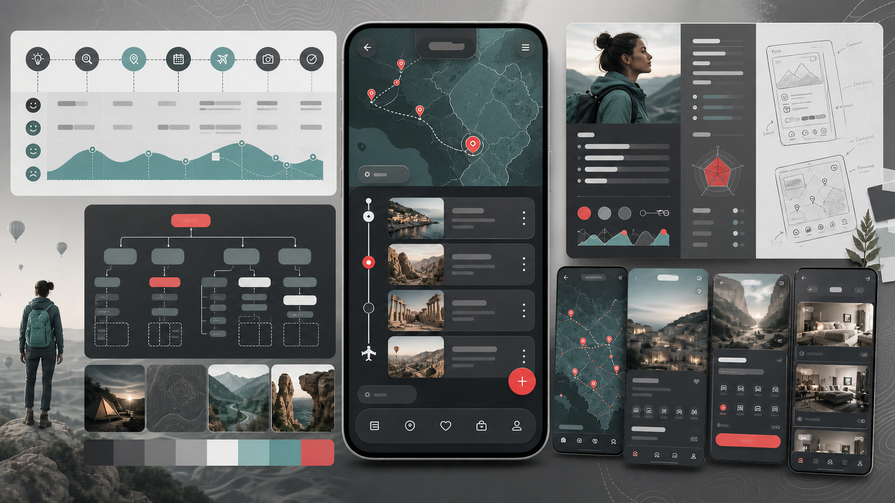
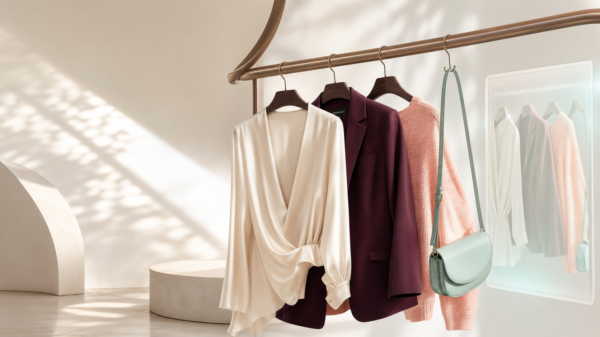

Product Design & Loyalty
Smart Rewards
A recommendation layer that helps loyalty members confidently choose and redeem the most relevant reward without taking away the full catalog.
Explore DetailsProduct & Brand Experience Designer
A multidisciplinary designer specializing in the consumer space, delivering everything from polished design systems to production-ready code.
A recommendation layer that helps loyalty members confidently choose and redeem the most relevant reward without taking away the full catalog.
Explore DetailsAI-powered fashion app that recommends outfits based on users' wardrobe, occasion, weather, and mood. Designed high-fidelity mobile screens and refined flows based on user testing.
Explore DetailsCommunity platform for eco-enthusiasts to share sustainability goals, inspiration, and everyday practices. Mapped user flows, prototyped layouts, and validated interactions.
Explore DetailsA thoughtful Android book tracker that helps readers build a personal library, track reading progress, and keep a calm record of every finished story.
Explore Details
Solo travel planning app for creating itineraries, discovering destinations, and simplifying trip bookings through user-centered navigation and layouts.
Explore Details
Brand Style Guide & Fashion Editorial Lookbook created to establish a cohesive visual identity and showcase seasonal collections through premium storytelling.
Explore DetailsHello, I’m Harshitha (Asha) Rajendran. My first design education was in Fashion Technology and Management, where I learned to notice how colour, material, and small decisions shape the way people feel. It taught me that a memorable experience needs both emotional storytelling and the care to make every detail work.
Today I bridge design and development. I listen closely, turn what I learn into ideas, and test what will genuinely help. Then I build alongside the team with SwiftUI, Kotlin, and React, bringing brand intent to life in practical experiences, from an AI stylist to conversion-focused commerce.
Outside the studio, I’m usually behind a camera lens (and a PSI award-winner), deep in a fantasy novel, writing poetry, or thinking about how technology can be more inclusive and human.
Download my full resume document to view detailed timelines, projects context, and professional methodologies.
Have an exciting project you want to collaborate on or a question about my design and brand experience services? Reach out directly via email or connect with me on social media. Let's build something exceptional.
AI-powered fashion ecosystem seamlessly digitizing physical closets to deliver personalized outfit recommendations

Tagline: Your wardrobe. Your stylist. Your confidence.
Role: Lead UX/UI Designer & Android Engineer
Focus: Minimalist closet management and AI style matchmaking.
Role: Product Design & Android Dev
Duration: 4 Weeks
Tools: Figma, Android Studio, Kotlin
Users face significant morning decision fatigue. Despite full closets, they feel they "have nothing to wear," struggle with impulse shopping/duplicate purchases, lack general styling confidence, have difficulty identifying cuts matching their body shape, and contribute to environmental fashion waste.
I analyzed leading closet apps: Whering (strong organization, weak AI), Acloset (good database, high UI cognitive load), Cladwell (capsule focus, lacks try-ons), Indyx (excellent human styling, high cost), and Alta (standalone AI styling, lacks closet synchronization). ishtyle combines the strengths of all these approaches.
Mia, 28 - Busy Urban Professional: Mia values fashion but suffers from decision fatigue. Her calendar is packed, and she needs to transition seamlessly between corporate meetings and creative agency workspaces without changing outfits.
The app structure features five primary tabs: Home Dashboard (Daily Outfits, Mood Stylist, Calendar Sync), Wardrobe (Tops, Bottoms, Shoes, Outerwear), Style Lab (Color analysis, Body scanner), Shop (Closet gap recommendations), and Sustainability Tracker (Cost-per-wear index).
ishtyle (Root) │ ├── 📁 app/src/main │ ├── 📁 java/com/example/ishtyle/ │ │ ├── MainActivity.kt # Entry navigation coordinating views │ │ └── 📁 ui/ │ │ ├── BrandLogos.kt # Vector image rendering modules │ │ └── 📁 theme/ │ │ ├── Color.kt # Brand color palette variables │ │ ├── Theme.kt # Light/Dark scheme configurations │ │ └── Type.kt # Typography definition for custom fonts │ │ │ └── 📁 res/ │ └── 📁 font/ # Variable TTF files (Playfair & Source Sans) │ └── 📁 gradle/ # Version catalogs
For modularity, we represented clothing properties using a lightweight Kotlin data model to hold digitizing attributes:
data class WardrobeItem( val id: String, val name: String, val category: String, val itemType: String, // "shirt", "pants", "shoes", "jacket" val color: String = "Neutral", val season: String = "All", val occasion: String = "Casual", val isFavorite: Boolean = false, val isNew: Boolean = false )
Sign Up ➔ Style DNA Quiz ➔ Quick Vibe Swipe Match ➔ Skin Undertone Scan ➔ Wardrobe Import ➔ Profile Generated ➔ Daily Outfit Delivery.
Designed a clean mobile wireframe hierarchy: a splash landing page featuring the cursive wordmark, onboarding screens utilizing rounded cards, a spacious 2-column dashboard layout, and a step-by-step add-garment wizard (Viewfinder, Background Removal, Categorization, and Closet Confirmation).
Defined brand styles in code: Mint Luster (#DDFFF7) for backgrounds/canvas, Soft Peach (#FFA69E) for borders/dividers, Rich Mauve (#AA4465) for buttons/CTAs, Deep Plum (#2E131B) for typography structure, and Warm Canvas (#FAF8F6) for page surfaces. Fonts pair editorial Playfair Display with readable Source Sans 3.
Refined high-fidelity components to feature flat cards with micro-thin borders instead of heavy shadows, clean icons representing shirts/pants/shoes/jackets, and spacious, decluttered grids where garments are the heroes.
To align with our minimalism pillar, I implemented the custom vector outline draw methods using Jetpack Compose Canvas path structures:
@Composable fun ShirtOutlineDrawing(color: Color) { Canvas(modifier = Modifier.size(64.dp)) { val w = size.width val h = size.height val stroke = 2.5.dp.toPx() val path = Path().apply { moveTo(w * 0.4f, h * 0.15f) quadraticTo(w * 0.5f, h * 0.22f, w * 0.6f, h * 0.15f) lineTo(w * 0.8f, h * 0.25f) lineTo(w * 0.9f, h * 0.4f) lineTo(w * 0.8f, h * 0.45f) lineTo(w * 0.75f, h * 0.38f) lineTo(w * 0.75f, h * 0.85f) lineTo(w * 0.25f, h * 0.85f) lineTo(w * 0.25f, h * 0.38f) lineTo(w * 0.2f, h * 0.45f) lineTo(w * 0.1f, h * 0.4f) lineTo(w * 0.2f, h * 0.25f) close() } drawPath(path, color = color, style = Stroke(width = stroke)) } }
For the background removal step of the digitization wizard, I designed a custom Composable that uses infinite animations to render a scanning laser overlay and a mathematically calculated transparency grid:
@Composable fun RemoveBackgroundStep( garmentType: String, smoothEdges: Float, refinement: Float, onSmoothChange: (Float) -> Unit, onRefinementChange: (Float) -> Unit, onConfirm: () -> Unit ) { // Infinite transition for real-time laser/scanner effect val infiniteTransition = rememberInfiniteTransition(label = "scan_laser") val scanY by infiniteTransition.animateFloat( initialValue = 0.05f, targetValue = 0.95f, animationSpec = infiniteRepeatable( animation = tween(durationMillis = 2000, easing = LinearEasing), repeatMode = RepeatMode.Reverse ), label = "laser_pos" ) Column(modifier = Modifier.fillMaxSize().padding(24.dp)) { Box(modifier = Modifier.fillMaxWidth().weight(1f)) { // Checkerboard transparency canvas Canvas(modifier = Modifier.fillMaxSize()) { val cols = 20 val rows = 30 val boxW = size.width / cols val boxH = size.height / rows for (r in 0 until rows) { for (c in 0 until cols) { if ((r + c) % 2 == 0) { drawRect( color = Color(0xFFF3F1EF), topLeft = Offset(c * boxW, r * boxH), size = Size(boxW, boxH) ) } } } } // Render laser scanner line Canvas(modifier = Modifier.fillMaxSize()) { val lineY = size.height * scanY drawLine( color = RichMauve.copy(alpha = 0.8f), start = Offset(12.dp.toPx(), lineY), end = Offset(size.width - 12.dp.toPx(), lineY), strokeWidth = 3.dp.toPx(), cap = StrokeCap.Round ) } } } }
Designed a fully functional interactive prototype flow in Jetpack Compose: Splash delay transition, swipeable onboarding pages, active grid categories, and a multi-step camera digitization wizard complete with a shutter flash animation and laser scanner overlay.
Tested with 5 participants: Time-to-Digitize averaged 38 seconds (exceeding target of <45s), Style Quiz Completion sat at 90%, and Category auto-detection accuracy achieved 92% success during initial image uploads.
Combining design systems with functional code structures early avoids layout regression. High-fashion aesthetics (like editorial typography and a custom warm palette) elevate the utility from a simple closet inventory list to a desirable, daily lifestyle companion.
Helping loyalty members redeem with confidence
Smart Rewards is a recommendation layer for a loyalty platform that helps members choose and redeem rewards with less friction.
The project began with a simple observation: members were earning points, but many were not redeeming them. The issue was not a lack of rewards. It was the difficulty of deciding which reward was actually worth choosing.
My role: Product Designer
Scope: Research synthesis, problem framing, member experience, marketer controls, MVP definition, and measurement strategy
Loyalty members often reach the point of redemption and face a long list of rewards that are difficult to compare. This creates decision fatigue:
That hesitation can become abandonment. Points accumulate, rewards are forgotten, and the loyalty program feels less valuable.
For the business, this can lead to lower redemption, weaker engagement, fewer loyalty-driven purchases, and increased churn risk.
I focused on the highest-friction moment in the journey: choosing a reward.
Rather than creating more rewards or changing the existing loyalty program, I proposed a lightweight recommendation layer that helps members identify one relevant, eligible reward at the right time.
If members see one personalized, explainable reward recommendation instead of evaluating an entire catalog on their own, more members will redeem rewards and complete purchases.
Smart Rewards filters the existing reward catalog to options a member can actually use, then recommends the most relevant one.
The recommendation considers:
The experience does not remove choice. Members can still browse the full reward catalog at any time.
When a member opens the rewards dashboard, they see a “Recommended for you” card before the full catalog.
The card includes:
Example:
Recommended for you: $10 off your next purchase
You have enough points to redeem this reward today.
Estimated savings: $10.
This turns a complex decision into a clear next step while keeping the experience transparent and user-controlled.
The recommendation system works within merchant-defined boundaries. Merchants remain in control of the loyalty program, including:
Smart Rewards does not replace these systems. It filters eligible options first, then personalizes the recommendation.
The first shippable version gives marketers three simple actions:
To keep the concept focused and feasible, the MVP includes:
Future opportunities include goal-based recommendations, reward bundles, personalized reminders, and smarter timing.
Success is measured by completed customer behavior, not recommendation impressions alone.
I would validate Smart Rewards through a phased A/B test.
The control group would receive the existing rewards experience. The treatment group would receive the recommendation experience.
The goal would be to understand whether Smart Rewards drives a meaningful lift in redemption and purchase completion without creating unfavorable reward costs or reducing trust.
Using planning assumptions only:
This would represent 600 additional redemptions and approximately $36,000 in reward-associated purchase revenue.
These figures are illustrative, not observed results. A controlled pilot would be required to validate the impact.
Smart Rewards reframes personalization as decision support.
Instead of asking members to sort through a complex reward catalog, it helps them confidently take the next best action. Merchants set the guardrails, members retain control, and the platform can measure whether better guidance leads to redemption and purchase.
Building a community that makes sustainable living feel social

EcoCycle is a community-driven platform designed for people who want to live more sustainably. While many sustainability apps focus on tracking habits, EcoCycle encourages users to connect, share progress, exchange resources, and stay motivated through a supportive community. For this project, I focused on designing a personalized profile experience that helps users showcase their sustainability journey while encouraging meaningful community engagement.
Role: UX Research • Product Design • UI Design
Duration: 4 Weeks
Tools: Figma • FigJam • Miro
People who care about sustainability often rely on scattered resources such as social media groups, forums, and blogs to learn and connect with others. Existing platforms make it difficult to discover relevant information, celebrate personal progress, or build lasting relationships with like-minded individuals.


Research Methods: 40 user interviews, Affinity mapping, Persona creation, User journey mapping, Competitive research.
Pain Points: Sustainability information is scattered across multiple platforms; existing communities don't encourage meaningful engagement; users struggle to track and showcase progress; most platforms lack personalized experiences.

Emma, 'The Eco-Conscious Millennial': Emma regularly uses social media to share eco-friendly content and connect with eco-conscious communities. She participates in local cleanups and volunteer groups, but wants a central space to track her personal achievements and find trusted local resources.

Mapped Emma's journey when trying to find reliable eco-actions, showing how she goes from initial confusion and scattered searches to finding a community, setting her goals, gaining recognition via badges, and sharing them to inspire others.
Guiding Question: How might we design a user profile that showcases eco-friendly achievements, encourages community engagement, and creates a personalized experience that motivates users to stay engaged?

I simplified navigation so users could quickly access their profile, discover community content, participate in challenges, and monitor their sustainability progress from a single ecosystem.

The primary user flow focuses on helping users create a profile, personalize their sustainability identity, participate in community activities, and celebrate achievements.

I explored multiple low-fidelity layouts to determine the best balance between personal achievements, community content, and profile customization before moving into high-fidelity designs.
The visual language reflects EcoCycle's mission through: nature-inspired color palette, accessible typography, reusable card components, consistent spacing system, and badge-based achievement patterns.
The redesigned profile enables users to personalize their profile, showcase sustainability milestones, share eco-friendly achievements, discover community resources, and connect with people who share similar environmental interests. The experience transforms a static profile into a social hub that encourages long-term participation.


Developed a high-fidelity interactive prototype to demonstrate the onboarding, badge selection, and sharing overlays on mobile viewports.
Conducted usability tests evaluating navigation clarity, task completion rates for setting goals, and the social sharing functionality for unlocked environmental achievements.
This project reinforced that sustainability platforms succeed through community as much as functionality. While users wanted tools to track progress, they were equally motivated by opportunities to connect, learn, and celebrate achievements together. If I continued developing EcoCycle, I would expand the community experience by introducing local events, group challenges, and personalized sustainability recommendations to encourage ongoing engagement.
An intentional Android reading companion built for private progress
Foundmoon is a native Android app for readers who want a quieter, more personal way to manage a reading life. It brings current reads, a searchable collection, reflective notes, monthly goals, and gentle reminders into one private place without a social feed or public performance layer.
Role: Product Designer & Android Developer
Platform: Android 8.0+
Build: Kotlin, Jetpack Compose, Material 3, WorkManager
Data: Private versioned JSON storage with import/export support
Reading trackers often turn a restorative habit into an overloaded catalog or a social performance. Foundmoon was designed around a different question: how might a book tracker make it easier to return to a book, record a thought, and see meaningful progress without demanding more attention than reading itself?
Foundmoon takes a deliberately different position from social-first book platforms and data-heavy trackers: it prioritizes an individual reader’s library, progress, notes, and reminders. The product avoids a public activity feed and keeps core records in private app storage, making the experience feel more like a personal reading journal than a performance space.
Clara, 28 · Intentional Reader: Clara reads to decompress after demanding workdays. She wants a private, visually calm place to remember the books she owns, see what she is reading now, and record a thought before moving on, without the pressure of public ratings or streaks.
Clara’s journey shows how she uses Foundmoon to manage her reading life: she chooses a book from her collection, updates its status and notes in Journey, and reflects on her progress at month end. The app’s gentle reminders help her return to reading without adding pressure.
Foundmoon centers its Android navigation on three primary destinations: Journey for the current reading timeline, Collection for searchable shelves, and Goals for monthly progress. Full-screen editor, settings, and notification views support those destinations without crowding the main navigation.
enum class Status(val label: String) { READ("Read"), WANT("Want to Read"), CURRENTLY_READING("Currently Reading"), DNF("DNF") } data class Book( val id: String = UUID.randomUUID().toString(), val title: String, val author: String, val status: Status = Status.WANT, val review: String = "", val genre: String = "Uncategorized" )
Launch App ➔ Journey ➔ Add New Book or Open Existing Book ➔ Set Status, Genre & Notes ➔ Save ➔ Collection Updates ➔ Goals Reflect Current Month Progress. From Menu, readers can adjust appearance and notifications or safely import/export their library.
The screen hierarchy moves from a welcoming landing experience into a persistent three-tab reading space. The full-screen book editor keeps data entry focused, while book details use an in-context sheet for faster edits, status changes, and reflection.
The interface uses a night-sky reading palette: Deep Plum, Cream, Lavender, Coral, and Teal, supported by rounded cards, Material 3 controls, and a system/light/dark appearance setting. The implementation keeps those core values centralized for a consistent visual language.
private val Plum = Color(0xFF3E2A4D) private val Cream = Color(0xFFF7F1E8) private val Lavender = Color(0xFFB28ACA) private val Coral = Color(0xFFD47A78) private val Teal = Color(0xFF7AA6A6)

The polished library surface puts a reader’s books first, using clear status treatment and searchable collection controls. The code uses Compose state to prevent an overloaded active shelf, then presents an explicit replacement choice when a fourth Currently Reading title is selected.
fun saveBook(book: Book) { val otherCurrent = books.count { it.id != book.id && it.status == Status.CURRENTLY_READING } if (book.status == Status.CURRENTLY_READING && otherCurrent >= 3) { pendingCurrentlyReading = book return } books = if (existing == null) books + book else books.map { if (it.id == book.id) book else it } }
The shipped Android build packages the Compose experience as a debug APK and release AAB. Its interactive prototype includes the landing flow, book editor, status management, goals, dark mode, import/export, and notifications, so design decisions can be evaluated in the same environment where readers will use them.
Implementation validation focused on key user paths: adding and editing books, moving between reading states, enforcing the active-reading limit, preserving data across launches, merging an imported library, and respecting notification permission on Android 13+. A formal participant study is the next step; this case study does not present unverified usability metrics.
The app stores a versioned data file in private app storage and migrates legacy preferences on first load. Readers can export their library as foundmoon-books.json and import it later; incoming records are merged by unique ID instead of overwriting the existing shelf.
Foundmoon is a study in designing for continuity rather than engagement metrics. The product reduces the effort required to remember what a reader is reading, gives them ownership over their data, and uses Android-native capabilities only when they support the reading habit.
Foundmoon | An intentional Android book tracker

Foundmoon is a calm Android companion for readers who want to remember the books that move them without turning reading into another noisy social feed. It brings a personal library, progress tracking, thoughtful notes, and gentle goals into one focused mobile experience.
Role: Product Designer & Android Developer
Platform: Android
Focus: Personal library management, reading progress, and reflective book logging
Tech Stack: Kotlin, Jetpack Compose, Room, Material 3
Many book apps prioritize reviews, recommendations, and public activity over the private reading habit. Readers need a lightweight place to keep their shelves organized, capture progress quickly, and return to their next read without unnecessary setup or distraction.
Early conversations with active readers revealed a repeated need for clarity over complexity. Users wanted to know what they were reading now, what to pick up next, and how their small sessions added up over time.

Clara, 28 · The Intentional Reader
She reads to decompress after demanding workdays, but loses momentum when her books, notes, and reading goals live in separate places. Foundmoon gives Clara one calm home for her current read, her backlog, and the milestones she wants to celebrate privately.

Foundmoon uses a focused Android navigation model built around the moments readers revisit most: their library, active reading, and personal goals.


The interface pairs warm, bookstore-inspired tones with generous spacing, rounded cards, and accessible Android controls. Covers and personal reading context remain the visual focus, while typography and status chips make shelves easy to scan.

The final experience uses Jetpack Compose to keep core interactions responsive and consistent: a bottom navigation scaffold for orientation, modal sheets for focused book edits, and state-aware reading badges that let readers understand each shelf at a glance.
Foundmoon demonstrates how a focused Android product can make a small ritual feel more sustainable. By reducing the work of logging a book and removing performative social pressure, the app leaves more attention for reading itself.
Designing a solo travel experience that feels safe, personal, and empowering

YonderLust is a conceptual mobile app that helps solo travelers discover destinations, plan itineraries, and explore confidently through a personalized, safety-focused experience. The project was completed as a two-day design sprint to explore how thoughtful product design can reduce travel anxiety while preserving the excitement of independent travel.
Solo travel offers freedom and self-discovery, but planning a trip alone can also feel overwhelming. Safety concerns, itinerary planning, and the uncertainty of exploring unfamiliar places often discourage people from traveling independently.
Role: Product Designer
Duration: 2-Day Design Sprint
Tools: Figma • FigJam • Illustrator
Deliverables: User Research • User Flow • Wireframes • Design System • High-Fidelity Prototype
Solo travelers face three recurring challenges:
Most travel apps prioritize bookings rather than the emotional needs of solo travelers, leaving users to manage planning, safety, and discovery on their own.

Although this was a two-day sprint, I grounded the design in qualitative research by reviewing travel communities and existing products. My research methods included: analysis of Reddit solo travel discussions, travel blog comments, App Store / Google Play reviews, and competitive analysis of existing travel applications. These sources helped identify common frustrations and unmet user needs.

Maya Patel, 29 • The Solo Explorer
Goal: Plan safe, personalized solo trips without juggling multiple apps.
Pain Points: Trip planning feels overwhelming; safety is a constant concern; information is scattered across different platforms.
Needs: Personalized recommendations, simple itinerary planning, and built-in safety features.
"I want to focus on enjoying my trip, not managing it."

Key Design Opportunity: How might we simplify solo travel planning while helping users feel confident and safe throughout their journey?

The sitemap was organized around discover, plan, explore, and safety. Grouping features by intent reduced navigation complexity and made frequently used actions easier to access.

The primary flow follows a traveler from destination discovery through itinerary planning, exploration, and trip management while surfacing safety features at appropriate moments instead of interrupting the experience.

Early wireframes focused on layout, hierarchy, and navigation. I explored structures centered around a personalized home dashboard, interactive map exploration, a visual itinerary builder, and persistent access to safety features.

The visual language was intentionally calm and approachable to reinforce trust: soft teal palette to communicate safety and exploration, rounded components for a welcoming interface, clear typography, and consistent spacing targets.

The final prototype combines itinerary planning, destination discovery, and safety features like emergency contacts, live location sharing, and quick-access SOS functionality into one cohesive mobile experience.

The prototype demonstrates Maya's core travel planning experience from onboarding through itinerary creation and destination exploration.
Due to the project's two-day timeframe, formal usability testing wasn't conducted. Instead, I iterated on the interface using research insights, heuristic evaluation, and continuous design reviews throughout the sprint. Future iterations would include moderated usability testing to validate navigation and feature discoverability with solo travelers.
This project reinforced that designing for travel extends beyond booking experiences. Solo travelers need products that reduce uncertainty while preserving the excitement of exploration. If I continued developing YonderLust, I would expand the product with AI-powered itinerary recommendations, community features for connecting with fellow travelers, and location-based safety insights to create a more personalized and supportive travel experience.
Designing a luxury fashion brand through editorial storytelling

Luxury fashion is built on more than products. Every touchpoint, from the logo to packaging and digital experiences, shapes how customers perceive the brand.
AURA is a conceptual luxury fashion brand inspired by celestial storytelling, combining editorial aesthetics with contemporary elegance to create a cohesive identity across print and digital experiences.
Role: Brand Experience Designer
Duration: 2 Weeks
Tools: Adobe Illustrator • Photoshop • InDesign
Deliverables: Brand Strategy • Visual Identity • Editorial Lookbook • Style Guide • Packaging Concepts • Digital Brand Guidelines
Create a premium fashion brand that feels emotionally engaging and visually distinctive while maintaining consistency across every customer touchpoint, from editorial layouts to packaging and digital experiences.
AURA is positioned as a luxury fashion house where contemporary elegance meets celestial fantasy. Every design decision reinforces the brand's core values of artistry, emotion, elegance, authenticity, and imagination, creating an immersive and memorable brand experience.

The visual direction draws inspiration from celestial landscapes, soft lighting, and editorial fashion photography.
Design Principles: Celestial-inspired storytelling, elegant editorial layouts, premium typography, rich atmospheric color palette, and minimal yet expressive compositions.
The custom wordmark reflects AURA's ethereal personality through refined typography and hand-crafted details, creating a timeless identity that feels both modern and luxurious.


The palette combines deep navy tones with warm gold accents and soft neutrals to evoke mystery, elegance, and celestial beauty while maintaining strong visual contrast across print and digital applications.

A combination of Major Mono Display, Arapey, and Ubuntu establishes a clear visual hierarchy while balancing editorial sophistication with readability across different media.

To create a cohesive storytelling experience, I developed a flexible editorial system that includes: grid-based layouts, consistent typography hierarchy, full-bleed imagery, generous whitespace, and fashion illustrations integrated with photography. This system ensures visual consistency while allowing each collection to communicate its own narrative.
The identity extends beyond print into multiple customer touchpoints.

Designed premium packaging featuring navy boxes, gold foil branding, patterned tissue paper, and poetic message cards to reinforce the unboxing experience.

Created guidelines for editorial web layouts, social media content, iconography, and interface elements to ensure the brand remains consistent across digital platforms.
Developed merchandising concepts inspired by celestial environments, incorporating ambient lighting, layered fabrics, and constellation-inspired displays to create an immersive in-store experience.
Astria Collection & Editorial Spreads
Dreamscapes - Muted Luxury Palette
Stellar Usage - Logo Clean Space Guidelines
Ethereal Content - Imagery Composition Rules
Debut Collection Creative Direction Moodboard
AURA strengthened my ability to design beyond individual assets and think holistically about brand experience. Building a complete identity system reinforced how consistency, storytelling, and thoughtful design decisions shape how people perceive a brand across physical and digital touchpoints.
If I expanded the project, I would design a responsive ecommerce experience, interactive digital lookbook, and comprehensive design system to extend the brand seamlessly into a modern online retail experience.